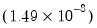
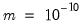
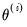
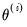
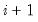
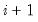

To create a likelihood object, choose or type the keyword
logl in the command window. The likelihood window will open with a blank specification view. The specification view is a text window into which you enter a list of statements which describe your statistical model, and in which you set options which control various aspects of the estimation procedure.
where series_name is the name of the series which will contain the contributions. This control statement may appear anywhere in the logl specification.
By default, EViews evaluates the specification by observation so that
all of the assignment statements are evaluated for the
first observation, then for the second observation, and so on across all the observations in the estimation sample. This is the correct order for recursive models where the likelihood of an observation depends on previously observed (lagged) values, as in AR or ARCH models.
You can change the order of evaluation so EViews evaluates the specification by equation, so
the first assignment statement is evaluated
for all the observations, then the second assignment statement is evaluated for all the observations, and so on for each of the assignment statements in the specification. This is the correct order for models where aggregate statistics from intermediate series are used as input to subsequent calculations.
As an example of the @byeqn statement, consider the following specification:
This specification performs robust regression by downweighting outlier residuals at each iteration. The assignment statement for delta computes the median of the absolute value of the residuals in each iteration, and this is used as a reference point for forming a weighting function for outliers. The
@byeqn statement instructs EViews to compute all residuals RES1 at a given iteration before computing the median of those residuals when calculating the DELTA series.
where pname is a parameter in the model and
sname is the name of the corresponding derivative series generated by the specification.
The @derivstep statement can be used to control the step size and method used to evaluate the derivative at each iteration. The
@derivstep keyword should be followed by sets of three arguments: the name of the parameter to be set (or the keyword
@all), the relative step size, and the minimum step size.
where “1” in the parentheses indicates that one-sided numeric derivatives should be used and
@all indicates that the following setting applies to all of the parameters. The first number following
@all is the relative step size and the second number is the minimum step size. The default relative step size is set to the square root of machine epsilon  and the minimum step size is set to .
The step size can be set separately for each parameter in a single or in multiple @derivstep statements. The evaluation method option specified in parentheses is a global option; it cannot be specified separately for each parameter.


 (relative step size) and m (minimum step size). Let  denote the value of the parameter
(relative step size) and m (minimum step size). Let  denote the value of the parameter  at iteration
at iteration  . Then the step size at iteration  is determined by:
. Then the step size at iteration  is determined by: is the likelihood function. Two-sided derivatives are more accurate, but require roughly twice as many evaluations of the likelihood function and so take about twice as long to evaluate.
is the likelihood function. Two-sided derivatives are more accurate, but require roughly twice as many evaluations of the likelihood function and so take about twice as long to evaluate.